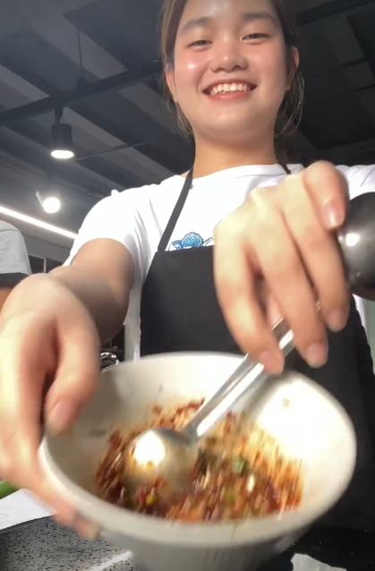
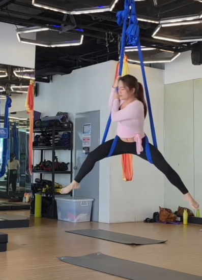
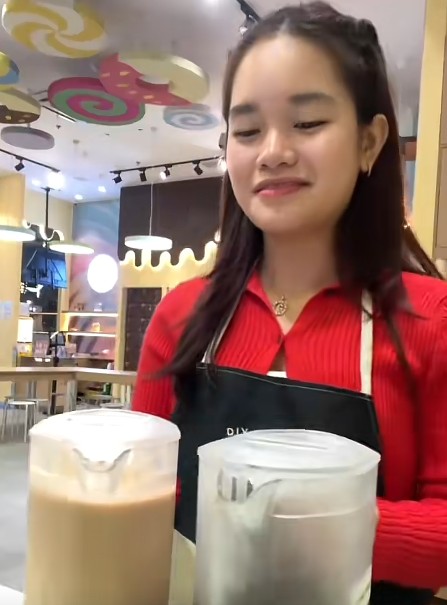
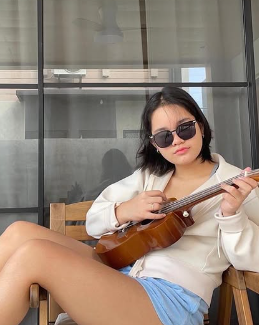

About Me⋆‧°𓏲ּ𝄢
I am Gwynneth Terania, and I go by the nickname “Gwen”. I am a sophomore BA Multimedia Studies student at the University of the Philippines Open University. In Taguig, I am an ODeL student, a younger sibling, a daughter, and sometimes a student at a Korean cultural center. In Quezon City, I am a senior copywriter in UP Advertising Core, an organization in UP Diliman. And I am a friend to many in the city of Manila. Overall, I am someone who has many responsibilities, but I get through everything through my passion for excellence and love for the duties that I do. As a serial side-quester, the list of my responsibilities and hobbies might get longer as time goes by, but for now, I invite you all to explore my website to get to know me more.
Passion Projects ❀.ೃ࿔*:･
Fit Recos
Carousell photos of outfits viewers can get ideas from. These include apparel and accessories that are worth trying and are affordable for a college student like me. 2026-01-14
Quest For Side Quests
Video sets of side quest recommendations for individuals who love finding joy in random creative explorations while making a more meaningful social life. 2026-03-27
Dapat Pakak, Dapat Pantay
Workshop in partnership with the Malabon LGBTQ+ organization to spread inclusivity and awareness of youth on gender equality. 2026-04-24
Things I Love⊹ ࣪ ˖꒰ঌ ໒꒱.⋆˚
-
Watching series
- I love watching Thai and Korean series because they make me feel kilig and validated most of the time.
-
Cooking foods
- Food is truly life! I know how to cook and I love sharing my cooking with the people I also love.
-
Working out
- I truly enjoy trying out different workouts like yoga, Pilates, and barre. They make me stronger and more fit.
-
Making drinks
- I have tried being a part-time matcharista and barista. I really just love how a specialty drink can make a person happy.
-
Playing instruments
- I am definitely not an expert, but I like playing instruments because they can translate my sorrow into a beautiful tune.



